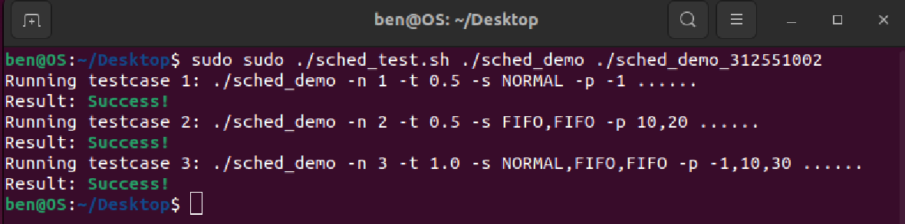
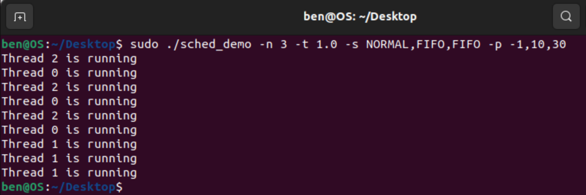
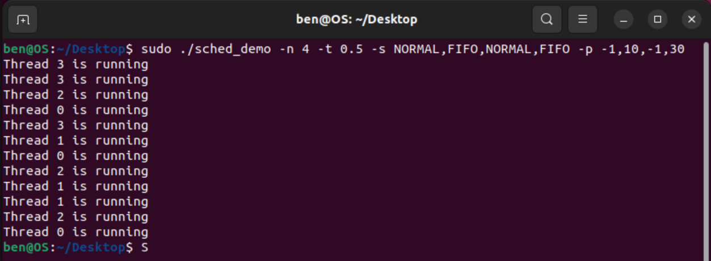

Outline
-
Different scheduling policies on created threads
- Linux Scheduling Policy
- SCHED_FIFO
- Requirements
- Main thread
- Worker Thread
How to implemente the program in detail
Step 0: Create new program
vim sched_demo_312551002.c |
Step 1: Define and include related library
#define _GNU_SOURCE #include <stdio.h> #include <stdlib.h> #include <string.h> #include <pthread.h> #include <sched.h> #include <unistd.h> |
Step 2: Define a struct for collecting required thread information
typedef struct {
pthread_t thread_id;
int thread_num;
int sched_policy;
int sched_priority;
pthread_barrier_t *barrier;
double time_wait;
} thread_info_t;
|
Step 3: Implement the Parse program arguments
testcases: -n 1 -t 0.5 -s NORMAL -p -1 -n 2 -t 0.5 -s FIFO,FIFO -p 10,20 -n 3 -t 1.0 -s NORMAL,FIFO,FIFO -p -1,10,30 |
void parse_args(int argc, char *argv[], int *num_threads, double *time_wait,
char ***policies_array, char ***priorities_array)
{
char *policies_str = NULL;
char *priorities_str = NULL;
/* Parse program arguments */
int opt;
while ((opt = getopt(argc, argv, "n:t:s:p:")) != -1) {
switch (opt) {
case 'n':
*num_threads = atoi(optarg);
break;
case 't':
*time_wait = atof(optarg);
break;
case 's':
policies_str = optarg;
break;
case 'p':
priorities_str = optarg;
break;
}
}
/* Split policies and priotities argument */
*policies_array = malloc(*num_threads * sizeof(char *));
*priorities_array = malloc(*num_threads * sizeof(char *));
char *rest_policy = policies_str;
char *rest_priority = priorities_str;
for (int i = 0; i < *num_threads; i++) {
if (i == 0) {
(*policies_array)[i] = strtok_r(policies_str, ",", &rest_policy);
(*priorities_array)[i] = strtok_r(priorities_str, ",", &rest_priority);
}
else {
(*policies_array)[i] = strtok_r(NULL, ",", &rest_policy);
(*priorities_array)[i] = strtok_r(NULL, ",", &rest_priority);
}
}
}
|
Step 4: Set CPU affinity and thread attribute
void set_thread_attributes(pthread_attr_t *attr, int sched_policy, int sched_priority) {
/* Set CPU affinity */
cpu_set_t cpuset;
pthread_attr_init(attr);
CPU_ZERO(&cpuset);
CPU_SET(0, &cpuset);
pthread_attr_setaffinity_np(attr, sizeof(cpu_set_t), &cpuset);
/* Set FIFO priority and attribute */
if (sched_policy == SCHED_FIFO) {
struct sched_param param;
param.sched_priority = sched_priority;
pthread_attr_setschedpolicy(attr, SCHED_FIFO);
pthread_attr_setschedparam(attr, ¶m);
pthread_attr_setinheritsched(attr, PTHREAD_EXPLICIT_SCHED);
}
}
|
Step 5: Implement the Worker Thread
void *thread_func(void *arg) {
thread_info_t *tinfo = (thread_info_t *)arg;
struct timespec start, current;
/* Wait until all threads are ready */
pthread_barrier_wait(tinfo->barrier);
/* Do the task */
for (int i = 0; i < 3; i++) {
printf("Thread %d is running\n", tinfo->thread_num);
clock_gettime(CLOCK_MONOTONIC, &start);
double elapsed = 0;
/* Busy for
|
Step 6: Implement the Main Thread
int main(int argc, char *argv[]) {
/* Parse program arguments */
int num_threads;
double time_wait;
char **policies;
char **priorities;
parse_args(argc, argv, &num_threads, &time_wait, &policies, &priorities);
/* Initialize a barrier for synchronizing the start of the worker threads */
pthread_barrier_t barrier;
pthread_barrier_init(&barrier, NULL, num_threads);
/* Allocate memory for storing thread information */
thread_info_t *tinfo = calloc(num_threads, sizeof(*tinfo));
/* Create
|
Complete sched_demo_312551002.c program can be downlaod at:
wget https://raw.githubusercontent.com/Benedict-CS/Operating-System-NYCU-2023/main/HW2/sched_demo_312551002.c |
Compile implemented program
gcc -o sched_demo_312551002 sched_demo_312551002.c |
Downlaod sched_test.sh
wget https://raw.githubusercontent.com/Benedict-CS/Operating-System-NYCU-2023/main/HW2/sched_test.sh |
Test the program
sudo ./sched_test.sh ./sched_demo ./sched_demo_312551002 |
Screenshot of test result:

Results of ./sched_demo -n 3 -t 1.0 -s NORMAL,FIFO,FIFO -p -1,10,30

Results of ./sched_demo -n 4 -t 0.5 -s NORMAL,FIFO,NORMAL,FIFO -p -1,10,-1,30

Describe how to implement n-second-busy-waiting?
void *thread_func(void *arg) {
thread_info_t *tinfo = (thread_info_t *)arg;
struct timespec start, current;
/* Wait until all threads are ready */
pthread_barrier_wait(tinfo->barrier);
/* Do the task */
for (int i = 0; i < 3; i++) {
printf("Thread %d is running\n", tinfo->thread_num);
clock_gettime(CLOCK_MONOTONIC, &start);
double elapsed = 0;
/* Busy for
|